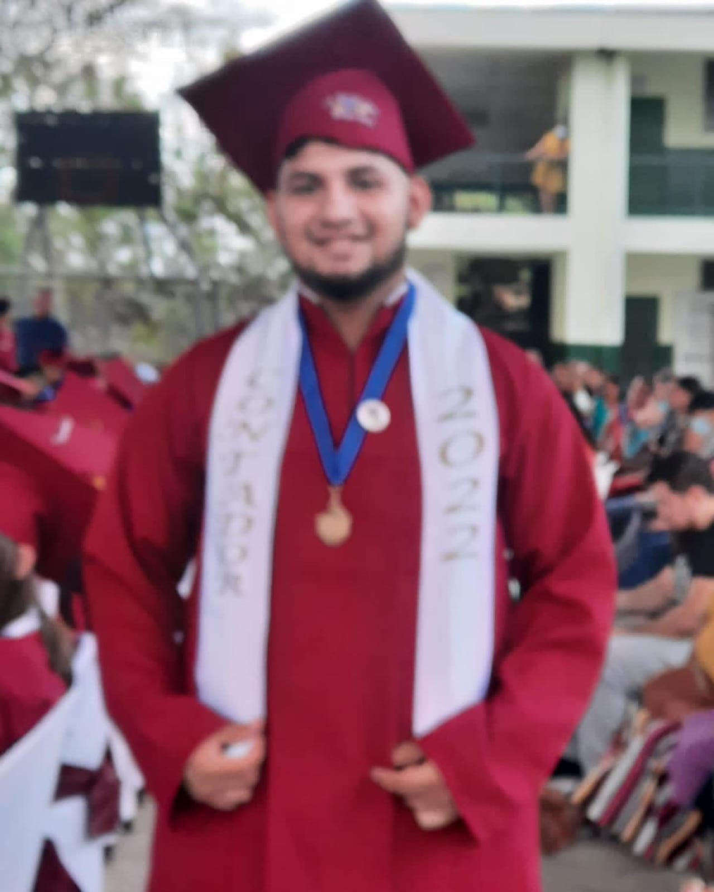
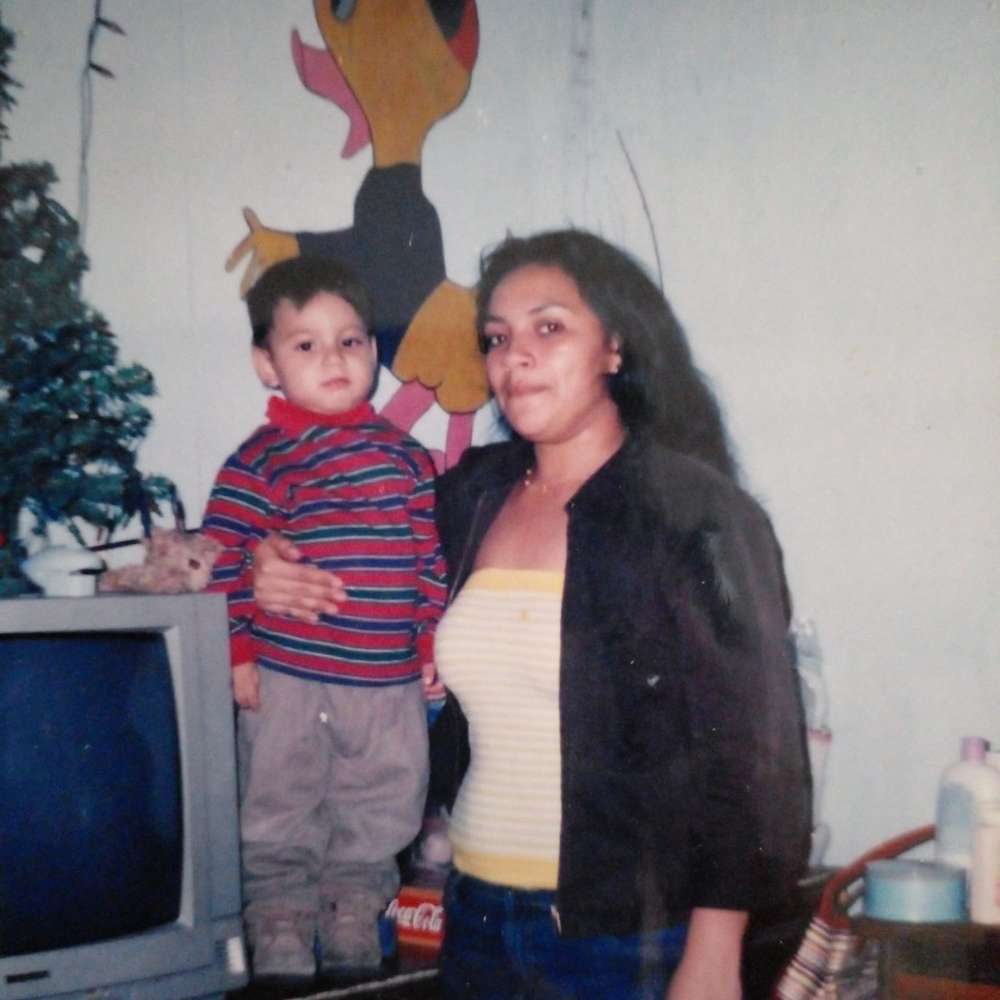

1. Let me introduce myself... Mi nombre es Ricardo, aunque la mayoría me conoce como Richie. A lo largo de mi vida he sido una figura tanto amada como odiada por muchos, pero esta es mi historia. Actualmente, soy estudiante de Ingeniería en Software y Negocios Digitales, cursando mi segundo año en la Escuela Superior de Economía y Negocios (ESEN). Nací el 19 de agosto de 2003 en San Salvador, aunque la mayor parte de mi vida la viví en Tonacatepeque.
2. Estudios  Mi educación comenzó en el Complejo Educativo Católico Ricardo Poma, donde cursé desde Kinder-4 hasta culminar mi bachillerato técnico en administración contable. Durante siete años, desde 2015, fui beneficiado con una beca de inglés otorgada por la Fundación FUSAL, lo cual marcó un hito importante en mi desarrollo académico. Además, para el período de mi bachillerato, recibí una microbeca de inglés por parte de la Embajada de los Estados Unidos, lo que amplió aún más mis oportunidades. Gracias a la Fundación FEPADE, también tuve una beca completa para culminar mi bachillerato. Hoy, me encuentro cursando mi segundo año de universidad, estudiando una carrera que combina mis dos grandes intereses: la tecnología y los negocios digitales, en una de las instituciones más prestigiosas de la región.
3. ¿Cómo era antes y cómo soy ahora? En mi niñez y adolescencia, solía ser el chico escandaloso, el gracioso del grupo, siempre listo con una frase ocurrente. En la escuela, todos sabían dónde estaba Ricardo; mi presencia era innegable, hasta el punto en que mi mamá me llamaba "la celebridad" del colegio. Aunque muchas veces fui un dolor de cabeza para mis maestros, me gusta pensar que hoy soy más un motivo de orgullo que un mal recuerdo para ellos. Con el tiempo, he aprendido a canalizar esa energía y creatividad en cosas más productivas, pero mantengo esa chispa que me hacía destacar. A veces, me doy cuenta de que mi perspectiva de la vida no siempre fue comprendida, pero esos desafíos me ayudaron a formar el carácter que tengo hoy.
4. Momentos clave Uno de los eventos más transformadores en mi vida fue la beca de inglés que recibí. Aprender un segundo idioma sin costo alguno me abrió puertas que de otro modo hubieran permanecido cerradas. Poder ingresar a ESEN, por ejemplo, es una de las oportunidades más grandes que he tenido, y todo se lo debo en parte a ese conocimiento adquirido.
5. Entonces...  He aprendido que, en la vida, las oportunidades no siempre llegan fácilmente, pero cuando se presentan, es necesario aprovecharlas al máximo. Cada obstáculo es una lección, y cada éxito, una recompensa al esfuerzo.